Duur
50-60 minuten
Werkopdracht 1
Voor je Smartschoolberichten schrijft, e-mails verstuurt of documenten opstelt, moet je weten welke houding van jou verwacht wordt. In deze module ontdek je waarom attitude, stiptheid, Planner, deadlines en beleefde communicatie belangrijk zijn op school, op stage en later op de werkvloer.
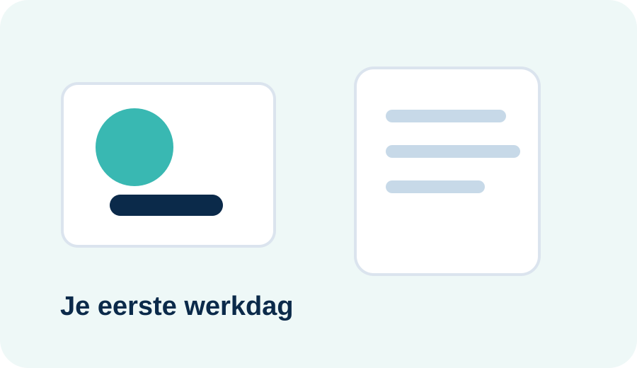
50-60 minuten
120 XP
Je begrijpt wat professioneel werken betekent.
Waarom is dit belangrijk?
Wanneer mensen spreken over een professionele houding, denken ze vaak aan beleefd zijn of op tijd komen. Dat klopt, maar professioneel werken gaat verder. Het betekent dat je verantwoordelijkheid neemt voor je eigen werk, afspraken respecteert, respectvol communiceert en begrijpt dat jouw gedrag invloed heeft op anderen.
In Organisatie & Logistiek bereid je je voor op administratieve en logistieke taken. Daar hoort vakkennis bij, maar ook gedrag dat vertrouwen wekt. Een werkgever wil kunnen rekenen op medewerkers die afspraken nakomen, zelfstandig kunnen plannen en tijdig communiceren wanneer er iets fout loopt.
Een werkgever tolereert herhaald te laat komen meestal niet zomaar. Eerst volgt vaak een gesprek of waarschuwing. Blijft het probleem duren, dan heeft dit invloed op je evaluatie, je stageverslag of zelfs je kans om te blijven werken.
Op school oefenen we die houding elke dag. Je bent op tijd aanwezig, je laptop is klaar, je Planner is gecontroleerd en je weet wat je moet doen. Zo bouw je gewoontes op die je later nodig hebt op stage en op de werkvloer.
Waarom zou een werkgever iemand die vaak te laat komt minder snel vertrouwen, zelfs wanneer die persoon inhoudelijk goed werk levert?
Wat ga je leren?
Theorie
Een professionele houding betekent dat je laat zien dat je je werk ernstig neemt. Dat merk je aan kleine gewoontes: op tijd komen, je materiaal klaarleggen, beleefd spreken, je Planner gebruiken, taken tijdig indienen en hulp vragen wanneer dat nodig is.
Professioneel gedrag gaat niet over perfect zijn. Iedereen maakt fouten. Het verschil zit in hoe je met fouten omgaat. Een professionele leerling of medewerker neemt verantwoordelijkheid, communiceert tijdig en zoekt naar een oplossing.
Waarden en normen
Een waarde is iets wat een persoon, school of bedrijf belangrijk vindt. Denk aan respect, verantwoordelijkheid, betrouwbaarheid, eerlijkheid, samenwerking en zorgvuldigheid. Waarden zijn vaak abstract: je kan ze niet zomaar afvinken.
Een norm is een concrete afspraak waarmee je een waarde zichtbaar maakt. Als respect een waarde is, dan is “je laat iemand uitspreken” een norm. Als verantwoordelijkheid een waarde is, dan is “je levert taken op tijd in” een norm.
| Waarde | Norm | In de klas | Op stage/werk |
|---|---|---|---|
| Respect | Je laat iemand uitspreken. | Je luistert naar uitleg. | Je onderbreekt klanten niet. |
| Verantwoordelijkheid | Je levert op tijd in. | Je volgt deadlines op. | Je werkt afspraken af. |
| Betrouwbaarheid | Je komt op tijd. | Je bent klaar bij de start. | Collega's kunnen op je rekenen. |
| Zorgvuldigheid | Je controleert je werk. | Je kijkt spelling en opmaak na. | Je voorkomt fouten in documenten. |
Klik telkens op de juiste keuze.
Stiptheid
Op tijd zijn betekent niet dat je op het moment van het belsignaal nog binnenwandelt. Het betekent dat je klaar bent om te starten. Je laptop staat klaar, je Planner is gecontroleerd en je weet wat je nodig hebt.
Op stage of op het werk kan te laat komen grote gevolgen hebben. Een collega moet jouw taak overnemen, een klant wacht langer of een levering loopt vertraging op. Een werkgever zal dit niet eindeloos tolereren, omdat stiptheid rechtstreeks te maken heeft met betrouwbaarheid.
Een eerste keer te laat kan gebeuren. Herhaald te laat komen zonder verwittiging leidt vaak tot een gesprek, waarschuwing of negatieve evaluatie. Bij stage kan dit zwaar doorwegen.
Je bent vóór het belsignaal aanwezig. Je laptop is opgeladen, je materiaal ligt klaar en je kan onmiddellijk meewerken. Zo verlies je geen instructies.
Je komt om 8.34 uur binnen. De les begon om 8.30 uur. Je laptop zit nog in je tas en je vraagt wat de opdracht is.
Planner
Veel leerlingen denken dat ze opdrachten wel zullen onthouden. Dat lukt misschien wanneer je maar één taak hebt. In Organisatie & Logistiek krijg je echter meerdere opdrachten, deadlines, documenten en afspraken. In het vijfde jaar komt daar stage bij, en bij jaarprojecten werk je vaak met verschillende deeldeadlines.
Daarom moet je dagelijks je Planner controleren. Je leert niet alleen opdrachten onthouden, maar zelfstandig werk organiseren. Dat is precies wat later ook van jou verwacht wordt op de werkvloer.
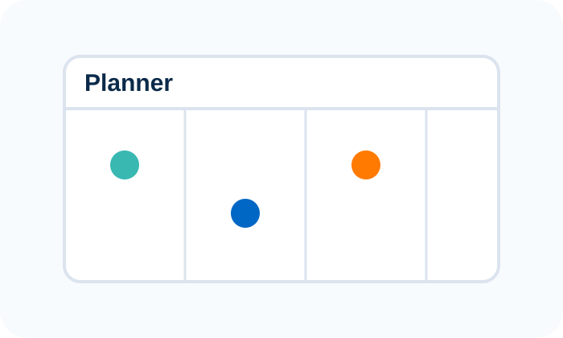
Zet een taak of deadline meteen in je Planner.
Kijk elke dag wat nog openstaat.
Begin niet pas op de avond voor de deadline.
Lukt iets niet? Laat dit vóór de deadline weten.
Je krijgt vrijdag een opdracht die woensdag klaar moet zijn. Noteer hieronder drie stappen die je in je Planner zet.
Deadlines
Een deadline is niet zomaar een datum. Het is een afspraak tussen jou en de persoon die jouw werk nodig heeft. Wanneer je te laat indient, kan iemand anders misschien niet verder. Daarom zijn deadlines belangrijk in projecten, administratie, logistiek en boekhouding.
In het vijfde jaar krijg je grotere opdrachten en stages. Daar wordt verwacht dat je zelf opvolgt wat klaar moet zijn. Wie deadlines respecteert, toont verantwoordelijkheid en betrouwbaarheid.
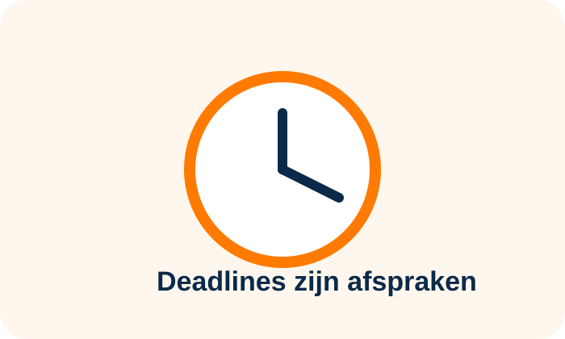
Opdracht gekregen. Je noteert de deadline.
Je verzamelt informatie.
Je werkt de opdracht af.
Je controleert en dient in.
Communicatie
Wanneer je ziek bent of een probleem hebt, is zwijgen geen professionele keuze. Op school volgen je ouders de afspraken rond afwezigheid. Maar als jij daardoor een opdracht of deadline mist, moet je zelf leren tijdig en beleefd te communiceren via Smartschool.
Een goed bericht bevat altijd context. De ontvanger moet begrijpen wat er gebeurd is, wat jij al geprobeerd hebt en welke vraag je stelt.
Schrijf een professioneel Smartschoolbericht waarin je meldt dat je ziek bent geweest en vraagt hoe je een gemiste opdracht kan inhalen.
Casussen
Je weet dat je door treinvertraging te laat zal zijn op je stage.
Je merkt twee dagen voor de deadline dat je opdracht niet zal lukken.
Je krijgt een grote opdracht met drie deeldeadlines.
Reflectie
Professioneel werken vraagt oefening. Kies één aandachtspunt voor de komende weken en maak het concreet.
Downloads
Leerkrachtenmodus
Module 2
Voor je Smartschoolberichten, e-mails of zakelijke brieven opstelt, heb je een basis nodig: duidelijke afspraken over opmaak, notatie, structuur en witruimte.
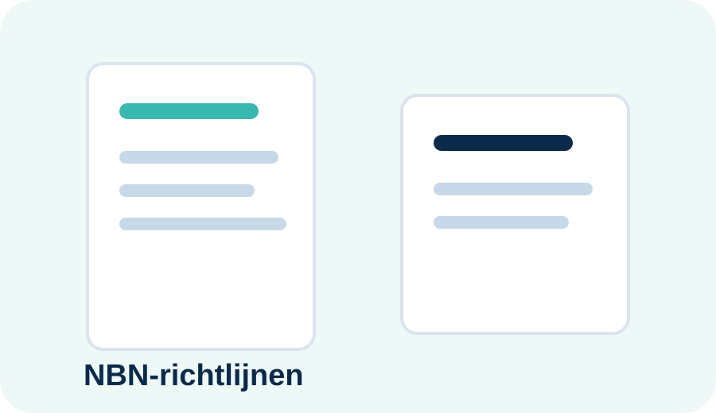
Theorie
NBN-richtlijnen zijn afspraken die helpen om documenten duidelijk, consequent en professioneel op te stellen. Ze bepalen niet wat je inhoudelijk moet zeggen, maar wel hoe je je boodschap helder en verzorgd presenteert.
In administratie en logistiek werk je met berichten, brieven, bestelbonnen, offertes, leveringsbonnen, facturen en interne documenten. Als iedereen die documenten anders opstelt, wordt samenwerken moeilijker.
Een slordig document kan onprofessioneel overkomen, zelfs wanneer de inhoud juist is. Correcte opmaak toont zorgvuldigheid.
Je leert deze afspraken nu al toepassen zodat ze later op stage vanzelfsprekend worden.
Hieronder kan je de samenvatting meteen bekijken. Je kan ze ook downloaden via het downloadcentrum van Module 2.
Waarom?
Een organisatie wil dat documenten snel herkenbaar, duidelijk en betrouwbaar zijn. Vaste normen zorgen ervoor dat de ontvanger sneller onderwerp, afzender, kern en bijlagen vindt.
Documentopmaak
Documentopmaak bepaalt hoe gemakkelijk een tekst gelezen wordt. Marges, witregels, alinea's en uitlijning lijken details, maar ze maken een groot verschil. Een professioneel document ziet er rustig uit en helpt de lezer om snel de juiste informatie te vinden.
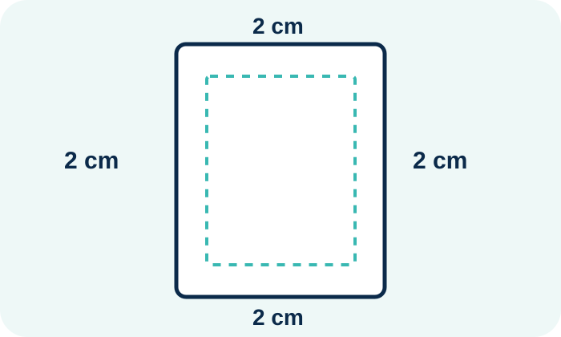
Voor gewone documenten gebruik je standaard 2 cm aan alle zijden.
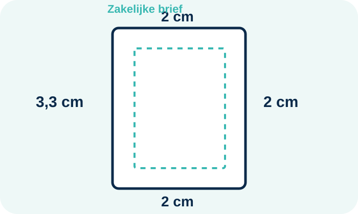
Voor een zakelijke brief gebruik je links 3,3 cm en aan de andere zijden 2 cm.
Andere documenten: 2 cm aan alle zijden.
Zakelijke brief: links 3,3 cm, andere zijden 2 cm.
Tussen begroeting, kern, slot en handtekening.
Onderwerp, inleiding, kern, slot en bijlage.
Een adres noteer je volledig en overzichtelijk. De woonplaats schrijf je in hoofdletters. Bij internationale adressen voeg je onderaan het land toe.
Voornaam Achternaam
Bedrijfsnaam
Straat en nummer
Postcode en WOONPLAATS
Land
Kaat Janssens
Leuvensesteenweg 44
1800 VILVOORDE
België
Reizen Delmonte
Brouckèreplein 6
1000 BRUSSEL
België
Notaties
| Onderdeel | Correct | Niet correct | Waarom? |
|---|---|---|---|
| Datum | 20 juli 2009 | 20/07/09 | Volledig en duidelijk. |
| Bedrag | € 123,45 | €123.45 | Spatie en komma. |
| Telefoon | tel. 011 15 42 85 | 011154285 | Leesbaar door groepering. |
| Gsm | gsm 0478 90 14 15 | 0478/90.14.15 | Professionele notatie. |
| Begroeting | Beste mevrouw | Beste mevrouw, | Geen leesteken. |
Praktijkvoorbeelden
Bekijk de aangeleverde voorbeelden. Let op adresblok, datum, onderwerp, begroeting, witregels, kern, slotformule, handtekening en bijlage.
Brief aan Reizen Delmonte.
Open voorbeeldVraag over bestelling van cd 'Happy Face'.
Open voorbeeldAntwoord van Platenhuis.
Open voorbeeldAfsluiting van de conversatie.
Open voorbeeldNBN-lab
Lees elke vraag aandachtig en duid telkens één correct antwoord aan. Let op spaties, komma's, hoofdletters en leestekens.
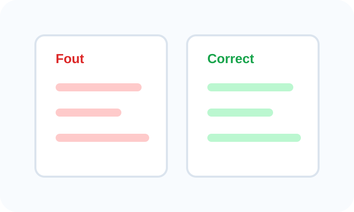
Eindopdracht
Je hebt de NBN-richtlijnen geoefend. Nu pas je ze toe in Microsoft Word. In de volgende stap krijg je een volledige werkopdracht met casus, stappenplan, opslaginstructies en Smartschool-indiening.
Werkopdracht
Je voert deze opdracht uit alsof je net gestart bent bij NorthBridge Office Group. Je werkt nauwkeurig, volgt het stappenplan en dient je bestand correct in via Smartschool.
Je schrijft een brief aan de personeelsdienst van NorthBridge Office Group. In je brief:
NorthBridge Office Group
Dienst Personeel
Stationsstraat 18
3500 HASSELT
België
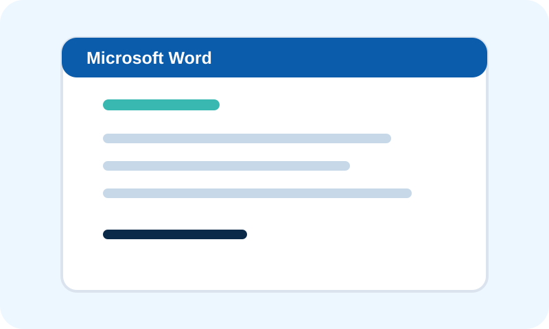
Open Microsoft Word en kies Leeg document.
Ga naar Indeling → Marges → Aangepaste marges. Stel in: boven 2 cm, onder 2 cm, rechts 2 cm en links 3,3 cm.
Gebruik Arial, lettergrootte 11 pt.
Gebruik tekstkleur Automatisch/zwart. Lijn de tekst links uit. Niet centreren en niet uitvullen.
Gebruik regelafstand 1,15.
Typ het adres van de ontvanger exact over. Gebruik hoofdletters voor de woonplaats.
Noteer de datum volledig, bijvoorbeeld: Hasselt, 5 juli 2026.
Schrijf een duidelijke onderwerpregel, bijvoorbeeld: Voorstelling nieuwe administratieve medewerker.
Gebruik: Beste mevrouw. Plaats geen komma of ander leesteken na de begroeting.
Gebruik meerdere alinea's en witregels. Schrijf volledige zinnen en verzorg je taal.
Sluit af met Met vriendelijke groeten en daaronder je voornaam en naam.
Lees alles na: marges, datum, onderwerp, begroeting, witregels, spelling en naam.
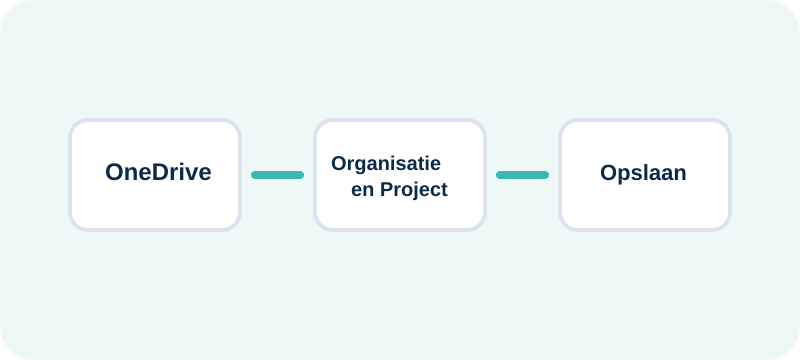
Sla je brief op in OneDrive in de map Organisatie en Project.
Gebruik altijd deze structuur:
JJJJMMDD_VoornaamNaam_NaamVanDeOpdracht
Voorbeeld:
20260705_GuustDeveux_BriefNBNNormen
Let op: gebruik geen spaties en geen speciale tekens. Word voegt de extensie .docx automatisch toe.
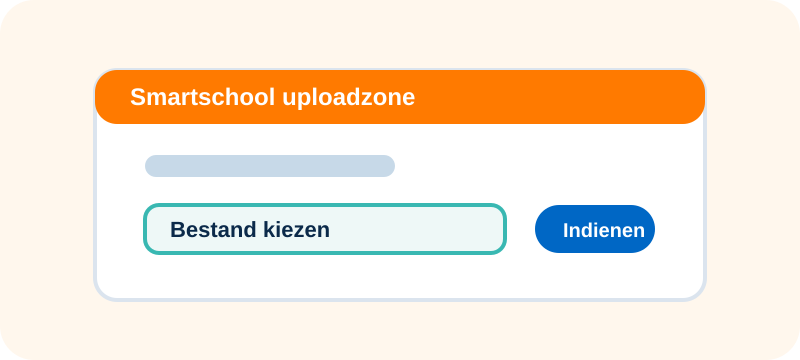
| Onderdeel | Punten |
|---|---|
| Marges correct ingesteld | 2 |
| Arial 11 pt, zwarte tekst, links uitgelijnd | 2 |
| Adresblok en datum correct | 3 |
| Onderwerp en begroeting correct | 2 |
| Inhoud duidelijk en professioneel | 4 |
| Witregels, slotformule en naam | 3 |
| Correct opgeslagen in OneDrive | 2 |
| Correct ingediend via Smartschool | 2 |
Gebruik deze checklist tijdens het schrijven van je brief.
Download checklistDownloads
Module 3
Smartschool is het hoofdcommunicatiemiddel op school. Je leert berichten professioneel opstellen, de Planner opvolgen, bijlagen correct toevoegen en opdrachten indienen via de uploadzone.
Nieuw bericht
Planner
Uploadzone
Opdrachten
Waarom Smartschool?
Smartschool wordt gebruikt voor berichten, documenten, uploadzones, opdrachten en de Planner. Daarom moet je het platform dagelijks controleren. Een gemist Smartschoolbericht kan betekenen dat je een deadline, wijziging of belangrijke instructie mist.
Op stage of werk verwacht men dat je digitale communicatie opvolgt. Wie berichten niet leest of deadlines mist, toont onvoldoende betrouwbaarheid.
Controleer Smartschool en de Planner elke schooldag. Noteer opdrachten, kijk naar uploadzones en reageer tijdig wanneer er een probleem is.
Bekijk de video wanneer je nog niet zeker bent hoe je een bericht stuurt of een bijlage toevoegt.
Berichtstructuur
Een goed bericht is kort, duidelijk en beleefd. De ontvanger moet onmiddellijk begrijpen waarover je bericht gaat, wat er gebeurd is en wat je vraag is.
Kort en concreet. Niet: “vraag”. Wel: “Vraag over uploadzone brief NBN”.
Bijvoorbeeld: Beste mevrouw. Geen leesteken na de begroeting.
Leg kort uit wat er aan de hand is en wat je al probeerde.
Sluit af met Met vriendelijke groet, je naam en je klas.
Bijlagen en uploadzone
Een correcte bijlage heeft een duidelijke bestandsnaam en wordt via de juiste uploadzone ingediend. Upload nooit zomaar een foto van een document wanneer een Word- of pdf-bestand gevraagd wordt.
Gebruik de afgesproken structuur: JJJJMMDD_VoornaamNaam_Bestandsnaam. Bijvoorbeeld: 20260705_GuustDeveux_BriefNBNNormen.docx.
Ga naar de uploadzone die de leerkracht op het bord noteert.
Kies het bestand uit OneDrive en controleer of het juiste document klaarstaat.
Klik pas op indienen wanneer je zeker bent dat de juiste versie gekozen is.
Bekijk deze video als je wil zien hoe een uploadzone werkt.
Planner
Bij ons spreken we over de Planner, niet over de Agenda. In de Planner vind je afspraken, taken, deadlines en opdrachten. Controleer deze elke schooldag.
Open Smartschool en controleer de Planner.
Noteer nieuwe opdrachten of controleer de deadline.
Kijk welke taken je nog moet afwerken.
Controleer of je alles correct hebt ingediend.
Je ziet in de Planner dat de brief NBN morgen om 16.00 uur moet worden ingediend.
Smartschool-lab
Lees elke vraag zorgvuldig. De antwoorden staan onder elkaar zodat je rustig kan vergelijken.
Eindopdracht
Je gebruikt de brief uit Module 2. Je schrijft het bericht rechtstreeks in Smartschool en stuurt dit naar je leraar. Je typt het bericht dus niet op deze website.
Staat het document in OneDrive > Organisatie en Project? Heeft het de juiste bestandsnaam volgens JJJJMMDD_VoornaamNaam_Bestandsnaam?
Ga naar het juiste vak en kijk naar de uploadzone die de leerkracht op het bord noteert.
Gebruik een duidelijk onderwerp, bijvoorbeeld Indienen brief NBN-richtlijnen.
Start met Beste mevrouw of Beste meneer, afhankelijk van je leraar.
Voeg je document toe of upload het in de juiste uploadzone.
Stuur het bericht naar de leraar en controleer of je bestand correct werd ingediend.
Module 4
Je werkt als administratief medewerker bij NorthBridge Office Group. De vergaderzaal wordt vernieuwd en er moeten 12 ergonomische bureaustoelen worden aangekocht. Jij volgt elk document van begin tot einde.
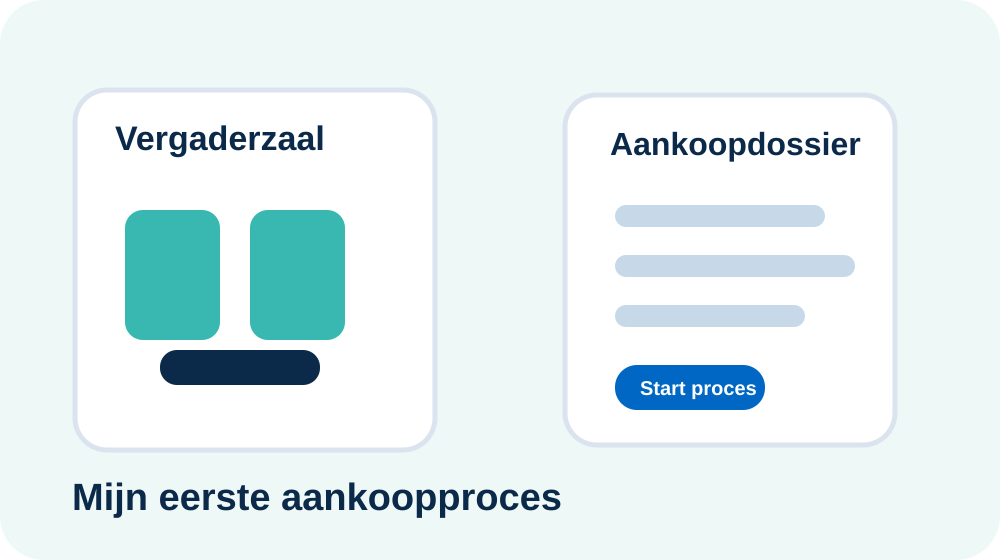
Waarom aankopen?
Een bedrijf heeft materiaal nodig om te kunnen werken: bureaustoelen, laptops, papier, verpakkingsmateriaal, voorraad, machines of diensten. Aankopen gebeurt niet zomaar. Er moeten afspraken zijn over prijs, hoeveelheid, levering en betaling.
Daarom ontstaat er bij elke aankoop een documentenstroom. Elk document bewijst een stap: wat werd gevraagd, wat werd aangeboden, wat werd besteld, wat werd geleverd en wat moet worden betaald.
Zonder documenten kan er discussie ontstaan. Heeft de klant echt besteld? Werden er 12 of 14 stoelen geleverd? Welke prijs werd afgesproken?
Je moet de documenten nog niet perfect kunnen berekenen. Eerst leer je herkennen wat elk document is, waarvoor het dient en waar je op moet letten.
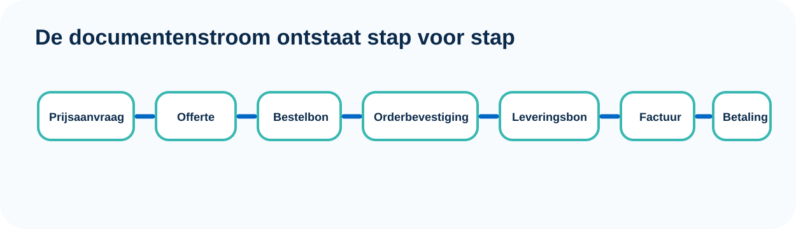
Stap 1
Een prijsaanvraag gebruik je wanneer je nog niet weet bij welke leverancier je zal bestellen. De koper vraagt informatie op over prijs, leveringstermijn, garantie, transportkosten en mogelijke korting.
Beste mevrouw
Wij wensen 12 ergonomische bureaustoelen aan te kopen voor onze nieuwe vergaderzaal.
Kan u ons uw beste prijs, levertermijn, garantievoorwaarden en eventuele transportkosten bezorgen?
Met vriendelijke groet
Sarah Jacobs
Klik op een onderdeel.
Stap 2
Een offerte is een prijsaanbieding van de verkoper. Ze vermeldt welke goederen geleverd kunnen worden, tegen welke prijs en onder welke voorwaarden. De koper kan verschillende offertes vergelijken.
Ergo Pro stoel
€ 149,00/stuk10% handelskorting · levering 7 werkdagen · 3 jaar garantie
Flex Chair
€ 139,00/stukGeen korting · levering 21 werkdagen · 2 jaar garantie
Comfort Seat
€ 165,00/stuk5% korting · levering 5 werkdagen · 5 jaar garantie
12 × Ergonomische bureaustoel Ergo Pro — € 149,00 per stuk
Handelskorting: 10%
Levering: binnen 7 werkdagen · Franco huis
Betaling: 30 dagen na factuurdatum
Klik op een onderdeel.
Stap 3
Wanneer de koper een offerte kiest, maakt hij een bestelbon. Dit document is belangrijk omdat het duidelijk maakt wat de koper officieel wil aankopen.
Leverancier: OfficePartner NV
Artikel: Ergonomische bureaustoel Ergo Pro
Aantal: 12 · Prijs: € 149,00/stuk · Korting: 10%
Leveradres: Stationsstraat 18, 3500 HASSELT
Klik op een onderdeel.
Stap 4
De orderbevestiging wordt door de verkoper opgesteld. De koper controleert of alles klopt. Dat is belangrijk, want soms sluipt er een fout in.
De orderbevestiging vermeldt 14 stoelen, terwijl NorthBridge er 12 heeft besteld.
Stap 5
Wanneer goederen aankomen, controleert logistiek de levering. De leveringsbon vermeldt wat geleverd werd. Je vergelijkt dit met de bestelbon en orderbevestiging.
Artikel: Ergo Pro bureaustoel
Aantal geleverd: 12
Verpakking: 12 dozen, geen zichtbare schade
Ontvanger: Tom Vermeulen · Handtekening: ........
Klik op een onderdeel.
Stap 6
Een factuur is een officieel betalingsdocument. De koper controleert of de factuur overeenkomt met de bestelbon, orderbevestiging en leveringsbon.
Brutobedrag: € 1 788,00
Handelskorting 10%: - € 178,80
Maatstaf van heffing: € 1 609,20 · BTW 21%: € 337,93
Totaal te betalen: € 1 947,13 · IBAN: BE00 0000 0000 0000
Klik op een onderdeel.
Fout ontdekt
Een creditnota gebruik je om een factuur geheel of gedeeltelijk te corrigeren. Bijvoorbeeld wanneer er te veel werd gefactureerd, goederen beschadigd waren of een korting vergeten werd.
De factuur vermeldt 14 stoelen, maar op de leveringsbon staan 12 stoelen en er zijn ook maar 12 stoelen geleverd.
Nu pas de volledige stroom
Je kent nu elk document afzonderlijk. Daarom kan je de volledige documentenstroom begrijpen: elk document bouwt verder op het vorige.
Aankoopproces-lab
Eindopdracht
Je werkt met de casus van de 12 ergonomische bureaustoelen. Maak in Word een overzicht voor Tom Vermeulen.
Leverancier: OfficePartner NV
Artikel: Ergonomische bureaustoel Ergo Pro
Aantal: 12
Prijs per stuk: € 149,00
Handelskorting: 10%
Levering: binnen 7 werkdagen
Betaling: 30 dagen na factuurdatum
Zet deze documenten in de juiste volgorde: prijsaanvraag, offerte, bestelbon, orderbevestiging, leveringsbon, factuur.
Maak een tabel met: document, opgesteld door, ontvangen door.
Schrijf per document in één eigen zin waarvoor het dient.
Leg uit welke documenten je vergelijkt wanneer de factuur 14 stoelen vermeldt in plaats van 12.
Leg uit waarom een creditnota nodig kan zijn.
Welk document vind je het moeilijkst? Waarom?
Gebruik deze kaart bij de eindopdracht.
Download spiekkaart